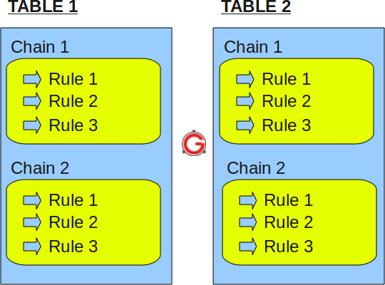
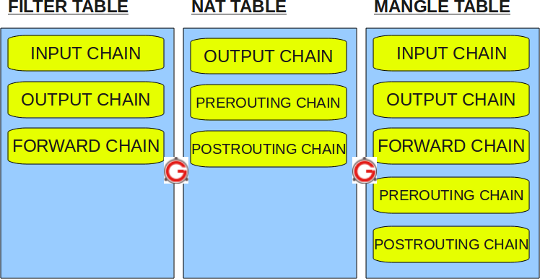

iptables tutorial
iptables firewall is used to manage packet filtering and NAT rules. IPTables comes with all Linux distributions. Understanding how to setup and configure iptables will help you manage your Linux firewall effectively.
iptables tool is used to manage the Linux firewall rules. At a first look, iptables might look complex (or even confusing). But, once you understand the basics of how iptables work and how it is structured, reading and writing iptables firewall rules will be easy.
This article is part of an ongoing iptables tutorial series. This is the 1st article in that series.
This article explains how iptables is structured, and explains the fundamentals about iptables tables, chains and rules.
On a high-level iptables might contain multiple tables. Tables might contain multiple chains. Chains can be built-in or user-defined. Chains might contain multiple rules. Rules are defined for the packets.
So, the structure is: iptables -> Tables -> Chains -> Rules. This is defined in the following diagram.

Fig: IPTables Table, Chain, and Rule Structure
Just to re-iterate, tables are bunch of chains, and chains are bunch of firewall rules.
I. IPTABLES TABLES and CHAINS
IPTables has the following 4 built-in tables.
1. Filter Table
Filter is default table for iptables. So, if you don’t define you own table, you’ll be using filter table. Iptables’s filter table has the following built-in chains.
- INPUT chain – Incoming to firewall. For packets coming to the local server.
- OUTPUT chain – Outgoing from firewall. For packets generated locally and going out of the local server.
- FORWARD chain – Packet for another NIC on the local server. For packets routed through the local server.
2. NAT table
Iptable’s NAT table has the following built-in chains.
- PREROUTING chain – Alters packets before routing. i.e Packet translation happens immediately after the packet comes to the system (and before routing). This helps to translate the destination ip address of the packets to something that matches the routing on the local server. This is used for DNAT (destination NAT).
- POSTROUTING chain – Alters packets after routing. i.e Packet translation happens when the packets are leaving the system. This helps to translate the source ip address of the packets to something that might match the routing on the desintation server. This is used for SNAT (source NAT).
- OUTPUT chain – NAT for locally generated packets on the firewall.
3. Mangle table
Iptables’s Mangle table is for specialized packet alteration. This alters QOS bits in the TCP header. Mangle table has the following built-in chains.
- PREROUTING chain
- OUTPUT chain
- FORWARD chain
- INPUT chain
- POSTROUTING chain
4. Raw table
Iptable’s Raw table is for configuration excemptions. Raw table has the following built-in chains.
- PREROUTING chain
- OUTPUT chain
The following diagram shows the three important tables in iptables.

Fig: IPTables built-in tables
II. IPTABLES RULES
Following are the key points to remember for the iptables rules.
- Rules contain a criteria and a target.
- If the criteria is matched, it goes to the rules specified in the target (or) executes the special values mentioned in the target.
- If the criteria is not matached, it moves on to the next rule.
Target Values
Following are the possible special values that you can specify in the target.
- ACCEPT – Firewall will accept the packet.
- DROP – Firewall will drop the packet.
- QUEUE – Firewall will pass the packet to the userspace.
- RETURN – Firewall will stop executing the next set of rules in the current chain for this packet. The control will be returned to the calling chain.
If you do iptables –list (or) service iptables status, you’ll see all the available firewall rules on your system. The following iptable example shows that there are no firewall rules defined on this system. As you see, it displays the default input table, with the default input chain, forward chain, and output chain.
# iptables -t filter --list
Chain INPUT (policy ACCEPT)
target prot opt source destination
Chain FORWARD (policy ACCEPT)
target prot opt source destination
Chain OUTPUT (policy ACCEPT)
target prot opt source destination
Do the following to view the mangle table.
# iptables -t mangle --list
Do the following to view the nat table.
# iptables -t nat --list
Do the following to view the raw table.
# iptables -t raw --list
Note: If you don’t specify the -t option, it will display the default filter table. So, both of the following commands are the same.
# iptables -t filter --list
(or)
# iptables --list
The following iptable example shows that there are some rules defined in the input, forward, and output chain of the filter table.
# iptables --list
Chain INPUT (policy ACCEPT)
num target prot opt source destination
1 RH-Firewall-1-INPUT all -- 0.0.0.0/0 0.0.0.0/0
Chain FORWARD (policy ACCEPT)
num target prot opt source destination
1 RH-Firewall-1-INPUT all -- 0.0.0.0/0 0.0.0.0/0
Chain OUTPUT (policy ACCEPT)
num target prot opt source destination
Chain RH-Firewall-1-INPUT (2 references)
num target prot opt source destination
1 ACCEPT all -- 0.0.0.0/0 0.0.0.0/0
2 ACCEPT icmp -- 0.0.0.0/0 0.0.0.0/0 icmp type 255
3 ACCEPT esp -- 0.0.0.0/0 0.0.0.0/0
4 ACCEPT ah -- 0.0.0.0/0 0.0.0.0/0
5 ACCEPT udp -- 0.0.0.0/0 224.0.0.251 udp dpt:5353
6 ACCEPT udp -- 0.0.0.0/0 0.0.0.0/0 udp dpt:631
7 ACCEPT tcp -- 0.0.0.0/0 0.0.0.0/0 tcp dpt:631
8 ACCEPT all -- 0.0.0.0/0 0.0.0.0/0 state RELATED,ESTABLISHED
9 ACCEPT tcp -- 0.0.0.0/0 0.0.0.0/0 state NEW tcp dpt:22
10 REJECT all -- 0.0.0.0/0 0.0.0.0/0 reject-with icmp-host-prohibited
The rules in the iptables –list command output contains the following fields:
- num – Rule number within the particular chain
- target – Special target variable that we discussed above
- prot – Protocols. tcp, udp, icmp, etc.,
- opt – Special options for that specific rule.
- source – Source ip-address of the packet
- destination – Destination ip-address for the packet